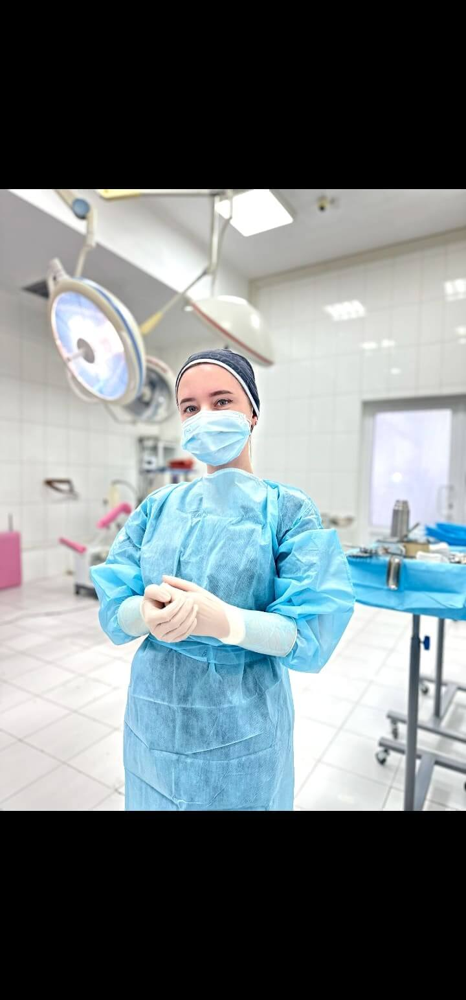

Программа для тех, кто хочет вернуть тело себе. Без давления, без сравнений с «до беременности» и без обещаний «как будто ничего не было».

✿Многие женщины приходят ко мне через 5, 10, иногда 15 лет после родов — и удивляются, что то, с чем они так долго жили, можно исправить. Сухость, снижение тонуса, дискомфорт в близости, лёгкое недержание — не «расплата за материнство», а медицинские состояния, которые лечатся.
Прийти можно в любой срок после родов — но не раньше 6 недель.
Программа подбирается индивидуально — у каждой женщины свои роды и свои задачи. Обычно это сочетание:
Подробный осмотр, разговор о ваших ожиданиях. Без оценок и сравнений.
Несколько вариантов с разной интенсивностью. Выбираете вы.
Чаще всего 2–4 визита с интервалом 3–6 недель.
Осмотры на 1, 3 и 6 месяц. Поддержка результата на год вперёд.
Веду пациенток после родов более 10 лет. Знаю, какие «мелочи» на самом деле важны и о чём женщины часто стесняются говорить.
Подробнее обо мне →Запишитесь на консультацию. Подберём план в вашем темпе, без обещаний «как до родов».
Записаться